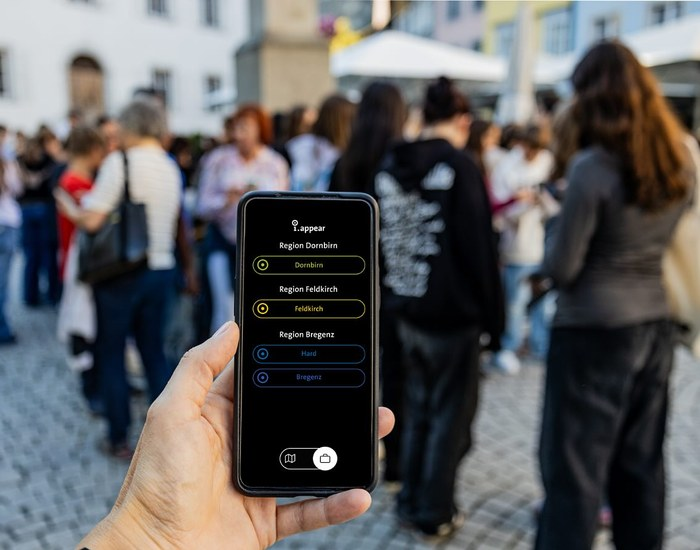

When a class goes through an i.grow project, two things happen at the same time. The students get to know a topic – urban history, values, memory culture, whatever the occasion is. And they learn how to design a digital format themselves: research, write, record, design, publish. The two are interwoven. Whoever has to tell a story themselves understands it differently from those who only hear it.
What stands at the end isn’t a school project in the sense of a homework exercise – but a digital walking tour that stays online. Parents can walk it. Fellow students too. In two cases, it has grown into something the whole city can use.
This post describes the workflow. It is aimed at teachers and school leaders who want to know what concretely happens in an i.grow project – and what effort they should plan for.
Two real examples we work with
Before we get into the process: a brief look at what has come out of school work so far.
Zusammenwachsen is a tour by a class of Mittelschule Feldkirch-Levis. Four locations. The question the young people asked themselves was: What holds us together? Which values do we share? They captured their answers in interviews, wrote their own stories about them, produced images, animations, photographs and short films from them. Since publication, the tour has been part of the i.appear platform and can be walked in Feldkirch. Made possible through the funding line Kunst ist Klasse of the Austrian Federal Ministry of Arts, Culture, the Civil Service and Sport.
Ein Oktobertag is a tour by a class of Mittelschule Feldkirch-Oberau. Five locations. Topic: the bombings over Feldkirch on 1 October 1943. The class approached the Second World War through research, conversations and creative methods. Today, the tour leads young and old from the city centre to the Antoniushaus. In collaboration with the author Erika Kronabitter and a contribution by the sound artist Arno Oeri. Also funded through Kunst ist Klasse.
Both are not lessons from theory. Both came about with classes with whom we jointly shaped research, production and publication. What they show: it works, and – with a clear structure – it can be realised within a school year.
What the workflow looks like in detail
An i.grow project runs in five interconnected phases. They aren’t rigidly sequential, but often overlap – research and production, for example, alternate. The framework, however, looks like this:
1. Kick-off: idea, topic, clarifying the framework
At the beginning there is a conversation between the teacher and i.appear. What is clarified: what the class wants to work on, which subject (or subjects) carry the project, how much time is available, and which organisational form fits best – a concentrated block in a project week, regular sessions over several months, a semester-long project.
The choice of topic is open. In practice, location-based topics work particularly well: local history, memory culture, values and coexistence, urban development, migration. What matters is that there is a real connection to the students’ living environment. “Bombing of Feldkirch 1943” has a different ring when the Antoniushaus courtyard lies right outside the classroom.
At the end of this phase, there’s a rough logic of locations: how many, what at which place, which narrative stance, which media formats.
2. Research: working with real sources
The class splits into teams. Each team takes on one or two locations and starts the research. This is where the project turns from a school workshop into media production: students work with city archive material, newspaper archives, photographs, old plans. They conduct interviews with contemporary witnesses, residents or experts – depending on what the topic calls for. They learn to contextualise sources: who said this, when, with what intention? What is fact, what is memory, what is interpretation?
This phase is more demanding than it sounds in the curriculum. It is, at the same time, the one in which most of the educational competences really come into being – source criticism, structuring, selecting, taking responsibility.
i.appear supports this step with methodology (how do you conduct an interview, how do you check a source), by mediating with archives (the Dornbirn city archive, for example, is a long-standing cooperation partner) and by what Marilena Tumler brings from her practice as a historian and media ethicist: the insistence that nothing goes into the tour that isn’t evidenced.
3. Media production: texts, audio, images, sometimes more
From research, concrete content emerges. The students write the location texts – concise, narrative, for an audience, not for the teacher. They record audio: spoken texts, interview excerpts, sometimes original sounds from the city. They produce images, illustrations or short videos. In Zusammenwachsen, students extended their content with animations and films. In Ein Oktobertag, a contribution by the sound artist Arno Oeri was added.
The ethical dimension also becomes tangible here. Who is named, who isn’t? Which images may be published? How does one handle an interview with a contemporary witness that contains difficult memories? These questions are not by the way, they are part of what students should learn when they publish themselves.
In this phase, i.appear brings tools along – audio recording devices, editing software, templates – but above all the didactic support for turning raw material into something ready to publish.
4. Building: content goes into the platform
The finished content is integrated into the i.appear platform. At which point students themselves work in the content management system, and where the i.appear team takes over the final processing, varies depending on the class and project size. In any case, the class is involved: in the order of locations, in the selection of what is placed where, in layout decisions.
The final technical publication – cleanly setting things up in Storyblok, connecting with the i.appear WebApp, embedding interactive elements – is done by the i.appear team. That is a deliberate decision. Students should learn media production, but they shouldn’t have to fight with why an API isn’t responding right now. Platform responsibility lies with us.
5. Publication and reflection
The tour goes live. It gets a fixed link, is reachable via the i.appear WebApp, without download, without registration, without data collection. The class usually organises a small launch – parents, fellow students, sometimes local politics or local press. With Ein Oktobertag, for example, the tour found broad echo in Feldkirch, including coverage in the Vorarlberger Nachrichten.
Afterwards, reflection in the class follows. What did we learn? What went well, what would we do differently? How do users react? – where “users” here don’t come from an analytics dashboard. i.appear collects no data, that is Privacy by Design. Feedback comes through what already works in public space anyway: conversations, emails, observations. That is slower than a live counter, but more honest.
What the school brings – and what i.appear brings
One of the more common worries before starting: do we have to build technical infrastructure? Do the students need prior knowledge? Do we have to buy expensive equipment?
The answer is: no.
What you as a school bring
- a class with a teacher as contact person
- time – as a block of lessons, project days, or spread over several weeks
- students’ smartphones or school devices for research and recordings
- a workspace: the classroom plus, depending on the topic, outdoor locations in the city
What i.appear brings
- workshop facilitation with overall didactic responsibility
- the platform – WebApp, CMS, hosting; Privacy by Design pre-installed
- tools for research, audio, image, AR where applicable
- methods from comparable projects plus collaborations with archives, museums, expert partners
- the final technical publication of the tour
Students don’t need prior experience with CMS, audio editing or media design. What they need to know, they learn in the project – and that is exactly the point.
Three formats, depending on depth
Not every school has the same possibilities. i.grow is therefore organised in three formats:
- Taster project – one or two days, a mini-format for one class. Suitable when the teaching staff or school leadership first wants to try out what actually happens here. At the end of the taster project, the class has produced a first, small media work; the school knows whether the format suits them.
- Project package – several days or weeks, a complete workshop cycle of research, production and publication. Ein Oktobertag and Zusammenwachsen emerged from this format.
- Year-long programme – spread over a school year, with several modules of different depth. Suitable for schools that want to make media production a strategic part of school culture.
The concrete packages – how many locations, which media formats, how much support, which funding line – we discuss in the preliminary conversation. Funding paths such as Kunst ist Klasse of the Austrian Federal Ministry of Arts, Culture, the Civil Service and Sport have, in the past, repeatedly carried what would have been difficult to manage without funding.
What this fits with – and why now
i.grow connects to several curriculum lines: Digital Basic Education in lower secondary, Technology and Design, Computer Science, Ethics – and from the 2027/28 school year, the new mandatory subject Media and Democracy in AHS upper secondary. A more in-depth engagement with this reform and the curriculum interweaving is in the post Media and Democracy as a mandatory subject – what schools will need from 2027/28.
In short: i.grow operationalises the Frankfurt Triangle logic (technology, society, interaction) in a concrete, location-based project format. When students produce a tour, they work on digital tools, social issues and their own role as designers all at once. That is exactly the interweaving the curriculum calls for – only not in the classroom, but in the city.
What remains
A school project mostly disappears after grading. An i.grow project stays online. The tour has a fixed link, is part of a growing platform with ten tours across four Vorarlberg regions, and can be used by others – parents, urban society, tourists, other schools.
For the students involved, that means: their own work isn’t for the drawer, but for the city. That is a different experience of school. It is also a different experience of media: whoever has once published themselves – with real sources, with ethical weighings, with the knowledge that the result is permanently public – walks through the world of social media differently.
How you can get started
The first step is a conversation. Topic idea, school context, time window, possible funding paths – that can be gone through in an hour. From this conversation, a concrete concept emerges, which we send to you in writing.
The full workflow from the first idea to handover can be found on the workflow page of i.appear (in German). Direct contact: marilena@iappear.app.